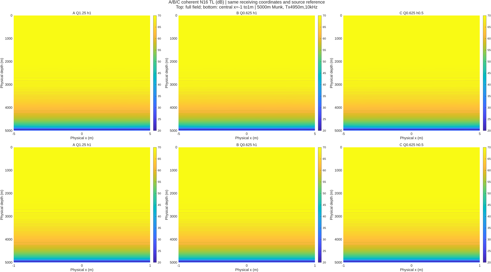
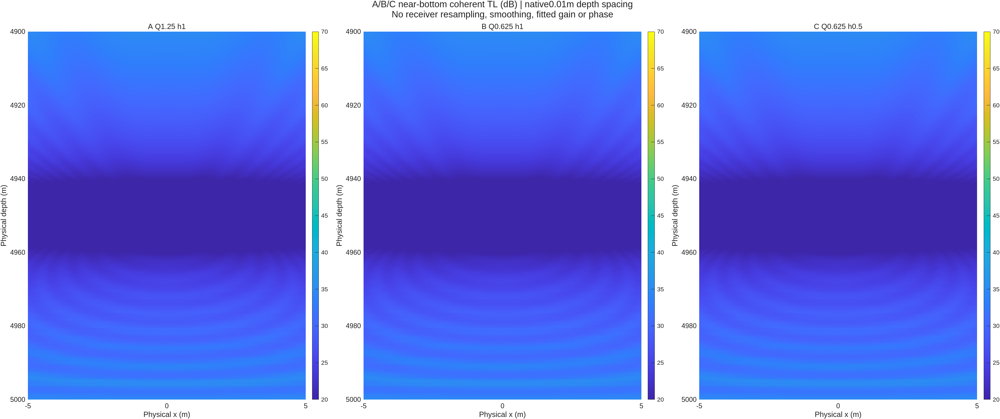
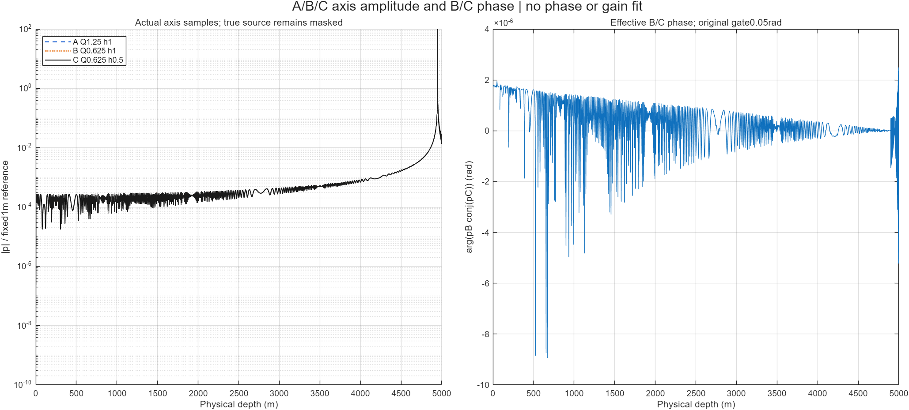

A：Q1.25m、步长1m；B：Q0.625m、步长1m；C：Q0.625m、步长0.5m。近源图表原有步长同步减半。其余模型、N16、声束和原接收网格不变。源是理想3D点源，条带宽度不适用。D与新FFP未执行，Munk及底参数是假设，尚非论文最终物理验收。



TL=-20log10|p|，固定1m参考，色标20至70dB仅用于显示。全深度以原5m与0.01m均匀分区分别绘制；无插值、平滑或坐标修改。真源点保持缺失，有效相位保留弱场缺口。同名FIG可编辑；数值结论以报告和CSV为准。
轴幅度三曲线几乎重合，修订副本以A虚线、B点线、C实线及显式图例区分，数据未改变；原图保留。